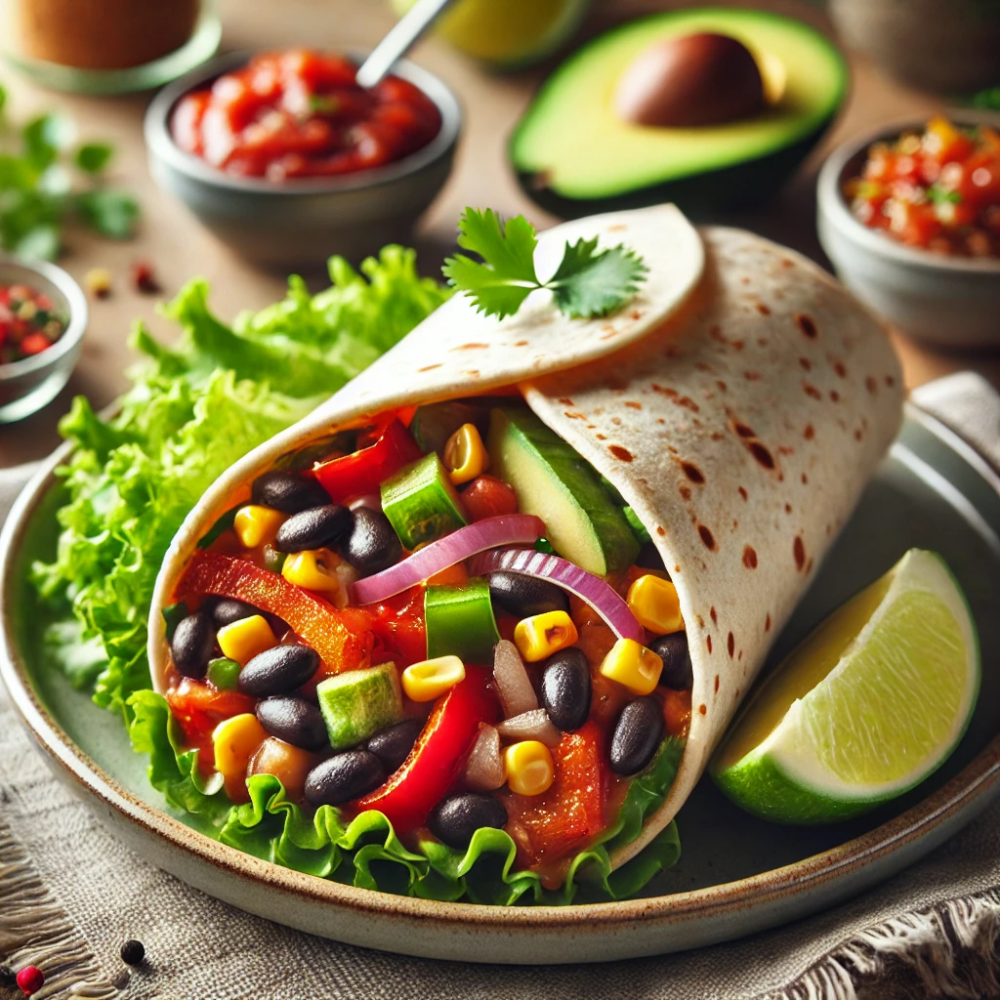

Try our vegetarian burritos filled with mushrooms, beans and corn, complemented by creamy avocado and subtle spice. Enjoy with a tomato salsa on the side

Kasvisburritot
Rustle up this vegan stir-fry which uses tempeh, a great source of protein made from soy beans. Quick and easy, it takes just 30 minutes to make
Serve these garlicky mushrooms in a rich tomato masala spiced with ground ginger, fennel seeds and cumin for an autumnal supper. Enjoy with rice or naan